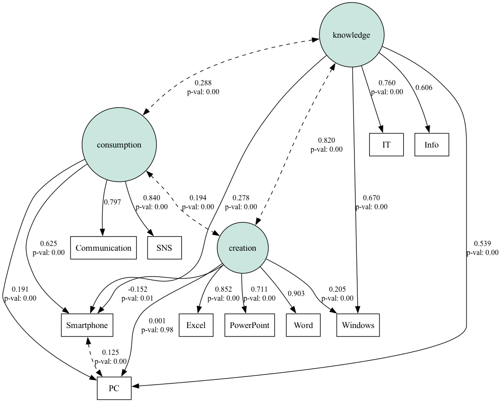

残差からモデルの合わない箇所を探す
モデルのどこがデータに合っていないかは, データの共分散行列 S と, モデルが予言した共分散行列 \Sigma(\hat\theta) の差 (残差) を見るとわかります. 残差を相関の尺度に揃えておくと, 変数の組どうしで大きさを比べられます. 残差の二乗平均の平方根が, 適合度の表の SRMR です (semopy.calc_stats() は SRMR を出力しないので, ここで計算します).
#残差を確かめる
#------------------------------------------------------------------
#データの共分散行列とモデルが予言した共分散行列の差を, 相関の尺度で見る
import numpy as np
obs = mod.vars['observed'] # モデルに含まれる観測変数
S = np.cov(df_sem[obs].values, rowvar=False, bias=True) # データの共分散行列
Sigma = mod.calc_sigma()[0] # モデルが予言した共分散行列
sd = np.sqrt(np.diag(S))
resid = pd.DataFrame((S - Sigma) / np.outer(sd, sd), index=obs, columns=obs)
print(resid.round(2))
"""
Communication Excel IT Info PC PowerPoint SNS Smartphone Windows Word
Communication 0.00 -0.03 0.03 0.07 0.02 0.06 0.00 -0.00 0.09 0.02
Excel -0.03 -0.00 0.01 -0.04 -0.02 -0.03 -0.08 -0.06 -0.04 0.03
IT 0.03 0.01 -0.00 -0.00 0.01 -0.07 -0.05 -0.00 0.09 -0.04
Info 0.07 -0.04 -0.00 -0.00 -0.03 0.06 0.01 0.01 0.08 -0.03
PC 0.02 -0.02 0.01 -0.03 -0.00 -0.05 -0.01 -0.00 0.11 -0.03
PowerPoint 0.06 -0.03 -0.07 0.06 -0.05 -0.00 0.02 0.01 0.02 0.02
SNS 0.00 -0.08 -0.05 0.01 -0.01 0.02 -0.00 0.00 0.03 -0.01
Smartphone -0.00 -0.06 -0.00 0.01 -0.00 0.01 0.00 -0.00 0.09 -0.01
Windows 0.09 -0.04 0.09 0.08 0.11 0.02 0.03 0.09 -0.00 -0.03
Word 0.02 0.03 -0.04 -0.03 -0.03 0.02 -0.01 -0.01 -0.03 -0.00
"""
#SRMR (残差の二乗平均の平方根. 対角と下三角の要素を使う)
srmr = np.sqrt((resid.values[np.tril_indices(len(obs))] ** 2).mean())
print('SRMR:', srmr)
"""
SRMR: 0.04042660130885509
"""残差が正の組は, データでの関係がモデルの予言より強い組です. Windows の行が目立ち, PC (0.11), IT (0.09), Smartphone (0.09), Communication (0.09), Info (0.08) との残差が大きくなっています. モデルでは Windows を情報作成志向だけにつないでいますが, データの Windows は IT 用語や情報倫理とも, モデルが説明できる以上に強く関係しています.
Windows の設問の選択肢には, ファイルの検索やコピー, ファイルサイズの確認, ZIP ファイルの展開など, パソコンの基本的な仕組みに関わる操作が多く含まれます. IT 用語の設問にも「OS」「拡張子」「CPU」などがあるので, Windows の操作は IT 用語や情報倫理の知識とも共通する部分を持つと考えられます. そこで, Windows を情報探求志向にも結びつけたモデルを推定してみます. 残差の大きい箇所を直す方法は他にもあり, これは候補の 1 つです.
#修正したモデル
#------------------------------------------------------------------
desc2 = '''
creation =~ Word + Excel + PowerPoint + Windows
knowledge =~ Info + IT + Windows
consumption =~ Communication + SNS
PC ~ creation + knowledge + consumption
Smartphone ~ creation + knowledge + consumption
PC ~~ Smartphone
'''
mod2 = Model(desc2)
mod2.fit(df_sem)
estimates2 = mod2.inspect(std_est=True)
print(estimates2[['lval', 'op', 'rval', 'Estimate', 'Est. Std', 'p-value']])
"""
lval op rval Estimate Est. Std p-value
0 Word ~ creation 1.000000 0.902817 -
1 Excel ~ creation 0.943159 0.851513 0.0
2 PowerPoint ~ creation 0.787335 0.710805 0.0
3 Windows ~ creation 0.226744 0.204725 0.000354
4 Windows ~ knowledge 1.106513 0.670206 0.0
5 Info ~ knowledge 1.000000 0.605709 -
6 IT ~ knowledge 1.255615 0.760449 0.0
7 Communication ~ consumption 1.000000 0.797009 -
8 SNS ~ consumption 1.053600 0.839756 0.0
9 PC ~ creation 0.001609 0.001452 0.981641
10 PC ~ knowledge 0.890435 0.539311 0.0
11 PC ~ consumption 0.239828 0.191169 0.0
12 Smartphone ~ creation -0.168782 -0.152384 0.007119
13 Smartphone ~ knowledge 0.458509 0.277699 0.000006
14 Smartphone ~ consumption 0.783506 0.624525 0.0
15 consumption ~~ consumption 0.635361 1.000000 0.0
16 creation ~~ creation 0.815135 1.000000 0.0
17 creation ~~ consumption 0.139921 0.194428 0.0
18 knowledge ~~ knowledge 0.366825 1.000000 0.0
19 knowledge ~~ consumption 0.138980 0.287881 0.0
20 knowledge ~~ creation 0.448629 0.820432 0.0
21 PC ~~ Smartphone 0.125249 0.125250 0.0
22 PC ~~ PC 0.611823 0.611842 0.0
23 Communication ~~ Communication 0.364856 0.364777 0.0
24 Excel ~~ Excel 0.274935 0.274925 0.0
25 IT ~~ IT 0.421749 0.421717 0.0
26 Info ~~ Info 0.633018 0.633117 0.0
27 PowerPoint ~~ PowerPoint 0.494811 0.494757 0.0
28 SNS ~~ SNS 0.294856 0.294811 0.0
29 Smartphone ~~ Smartphone 0.516227 0.516219 0.0
30 Windows ~~ Windows 0.283743 0.283772 0.0
31 Word ~~ Word 0.184933 0.184921 0.0
"""
print(semopy.calc_stats(mod2).T.loc[cols])
"""
Value
DoF 26.000000
chi2 174.089440
chi2 p-value 0.000000
CFI 0.977433
TLI 0.960942
RMSEA 0.064930
"""
semopy.semplot(mod2
,dir_fig + 'SEM2.png'
,plot_covs=True
,std_ests=True
,engine='dot')
パラメータが 1 つ増えたので, 自由度は 26 になりました. 適合度は, CFI が 0.952 から 0.977 へ, TLI が 0.920 から 0.961 へ, RMSEA が 0.093 から 0.065 へ改善し, いずれも目安を満たしています (SRMR は同じ計算で 0.028 です). \chi^2 検定は依然として棄却されるので, 完全に合ったモデルではありません.
修正によって, 構造モデルの結論も変わりました. 最初のモデルでは情報作成志向からパソコンへの自信へのパスが有意 (0.21) でしたが, 修正したモデルでは 0.00 (p = 0.98) になり, パソコンへの自信は主に情報探求志向 (0.54) で説明されるようになりました. これは影響が 0 だと証明されたのではなく, 0 と区別できる証拠が得られなかったということです. 交差させた 1 本の矢印を足すと, 測定モデルと構造モデルのパラメータがまとめて推定し直されます. この係数の値は, Windows をどの潜在変数の観測変数とするかに大きく左右されます. 最初のモデルは, Windows と情報探求志向の関係を, 情報作成志向の因子負荷量やパス係数で補っていた可能性があります.
また, スマートフォンへの自信に対する情報作成志向のパスは -0.15 で, 有意な負の値になりました. 情報作成志向と情報探求志向の相関は 0.82 と高く, 2 つを同時に説明変数に入れると, 多重共線性と同じ問題が起こります. 係数は「情報探求志向と情報消費志向が同じ学生どうしで比べたときの関係」を表すので, 「Office の操作ができる学生ほどスマートフォンに自信がない」と読むことはできません. 説明変数どうしの相関が高いことだけでは負の符号の理由は決まりませんが, 相関の高い変数を同時に入れると, 係数の符号や大きさは不安定になりやすくなります.
データを見てモデルを修正するときは, 次の 2 点を守ります.
- 同じデータで評価した適合度は甘くなる: 修正後のモデルは, 修正に使ったデータにたまたま合う方向へ変えられています. 修正したモデルは, 修正に使っていないデータで確かめます. 分析の前にデータを探索用と検証用に分けておき, 検証用はモデルの修正に使わないようにします. この例のように全データを修正に使った場合は, 新しい調査などで確かめます.
- 修正には理論的な理由が要る: 残差が大きい箇所に矢印を足し続ければ適合度はいくらでも上がりますが, 意味のないモデルになります. 今回は, Windows の選択肢の内容という, 数値以外の理由で修正しました.
semopy以外のソフトウェアでは, 0 に固定していたパラメータを 1 つ自由にしたときの \chi^2 の減少量の見込み (修正指数) を出力して, 修正の候補を示すものもあります.
同じデータでも, モデルの立て方によって「何が何に影響するか」の結論は変わります. SEM の結果を報告するときは, 最終的なモデルだけでなく, どのような仮説から出発し, どのような理由でモデルを修正したかも合わせて示すことが大切です.